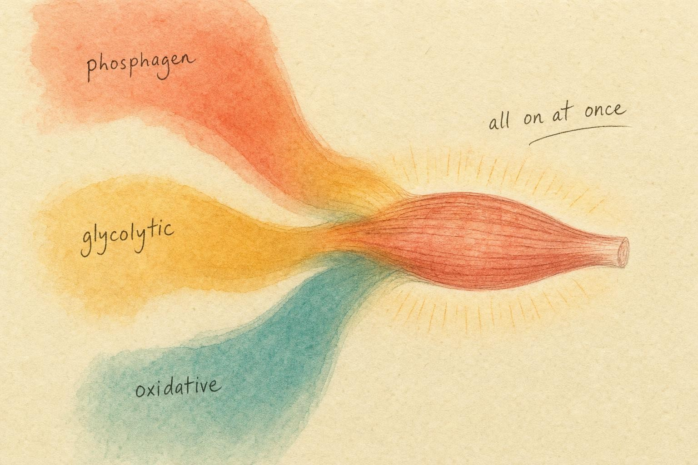
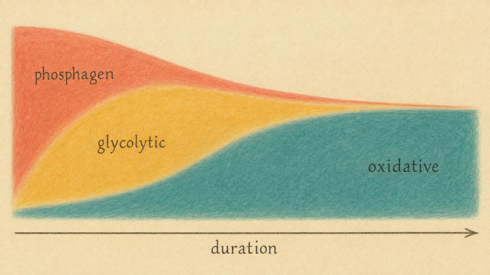

No Clean Switches: How the Three Systems Blend in Real Effort
Your body never flips a gear. It mixes three sources of power at once, and the mix is always shifting.
Stand at the base of a short, steep hill and sprint up it as hard as you can for eight seconds. Somewhere in your popular imagination there is a little diagram: for the first few seconds a system labelled "phosphagen" is doing all the work, then it clicks off and "glycolysis" takes over, then that clicks off and "aerobic" takes the baton for anything longer. It is a tidy picture. It is also wrong, and the wrongness matters, because it leads people to make training and pacing decisions based on a machine that does not exist.
Here is what actually happened during your eight seconds. From the very first stride, all three of your energy systems were running simultaneously. The fast ones surged to the front of the crowd, but the slow oxidative system was already awake and already contributing, and it never went to sleep at any point in your life. This chapter teaches you to stop thinking in switches and start thinking in blends.
We will build the case in layers. First we refresh the mechanics of each system so the vocabulary is precise. Then we look at why overlap is the only physically sensible arrangement, given how each system's output actually rises over time. From there we walk the full intensity-duration spectrum, from a one-second jump to a three-hour ride, checking the measured blend at each stop and asking which muscle fibers and which enzymes are doing the work. Along the way we correct two of the most persistent myths in popular exercise science, the gear-switch model and the idea that lactate is a metabolic waste product, and we connect the blend back to fuel selection and thresholds from earlier chapters. By the end you should be able to look at almost any human effort and sketch its approximate energy blend from first principles, not from memorized numbers.
A quick refresher: the three ways to rebuild ATP
Everything your muscles do is paid for in a single currency called adenosine triphosphate, abbreviated ATP. The molecule is an adenosine backbone carrying three linked phosphate groups. Energy is released when the bond holding the outermost, or terminal, phosphate group is broken by a water molecule, a reaction called hydrolysis, which converts ATP into adenosine diphosphate, abbreviated ADP, plus a free phosphate group. A muscle fiber holds only a tiny reserve of ATP, enough for roughly one to two seconds of all-out work. So the real question of exercise physiology is never "how much ATP do you have," it is "how fast can you rebuild ATP once you spend it." Your body has three machines for that job, and you have met all three in earlier chapters. Let us refresh them in a bit more mechanistic detail before we watch them cooperate.
Two of the three machines rebuild ATP through a direct, one-step enzymatic handoff of a phosphate group from one molecule to another, a process called substrate-level phosphorylation. It requires no oxygen and no multi-stage assembly line, which is exactly why it can happen so fast. The third machine builds ATP through a much longer, indirect route called oxidative phosphorylation, in which the energy released by handing electrons down a chain of proteins is used to pump hydrogen ions across a membrane, and the flow of those ions back across the membrane spins a molecular turbine, called ATP synthase, that assembles ATP. Oxidative phosphorylation happens inside the mitochondria and absolutely requires oxygen as the final destination for those electrons. Holding onto this distinction, quick and direct versus slow and indirect, explains almost everything about why the three systems have such different speeds.
The phosphagen system
The phosphagen system rebuilds ATP by borrowing a phosphate from a stored molecule called creatine phosphate, also called phosphocreatine. An enzyme called creatine kinase catalyzes a single-step reaction, creatine phosphate plus ADP yields ATP plus creatine, which is about as fast and direct as biochemistry gets. It requires no oxygen and almost no chemical steps, so it is nearly instantaneous, the fastest of the three. Its weakness is that the creatine phosphate tank is small, roughly three to five times the size of the resting ATP pool, and it drains quickly under maximal effort. Direct muscle biopsy measurements during thirty-second maximal cycling sprints show phosphocreatine falling to roughly seventeen percent of its resting concentration by the end of the effort, with the sharpest drop occurring in the first ten seconds (Bogdanis, Nevill, Boobis, & Lakomy, 1996). Think of the phosphagen system as a small, explosively fast battery that is mostly spent within about ten seconds of maximal use.
The glycolytic system
The glycolytic system breaks down glucose, delivered by the blood, or glycogen, the branched storage polymer of glucose you met in earlier chapters, through a ten-step enzymatic pathway called glycolysis. Glycolysis rebuilds ATP through the same substrate-level phosphorylation mechanism as the phosphagen system, which is why it is also oxygen-independent, but it needs more steps to unfold, so its output rises more slowly and peaks later, at roughly ten to fifteen seconds into a maximal effort. Glycolysis converts glucose into a three-carbon molecule called pyruvate. When the demand for ATP is outrunning what the oxidative system can process, an enzyme called lactate dehydrogenase converts much of that pyruvate into lactate. This step matters enormously and we will return to it in detail: it is not a malfunction, it is what allows glycolysis to keep running rapidly by regenerating a chemical partner, called NAD+, that the pathway needs to continue. Glycolysis can sustain high power output for tens of seconds up to a couple of minutes before the accumulating disruption to the muscle's chemical environment forces power output down.
The oxidative (aerobic) system
The oxidative system, also called the aerobic system, rebuilds ATP inside the mitochondria using oxidative phosphorylation to fully combust carbohydrate, fat, and, in smaller amounts, protein. Pyruvate from glycolysis, and fatty acids broken down through a mitochondrial process called beta-oxidation, both feed into a central hub of reactions called the citric acid cycle, which strips off high-energy electrons that are then passed down the electron transport chain described above. Because it processes fuel so completely, oxidative phosphorylation yields far more ATP per unit of fuel than substrate-level phosphorylation alone, but it is the slowest system to ramp up because it depends on your heart, lungs, blood vessels, and mitochondria delivering and using oxygen, a delivery chain you studied in the aerobic capacity chapters. It is also the only system that can burn fat, which is by a wide margin the largest fuel reserve you carry, and it can sustain meaningful power output for hours.

Three sources, one fiber, always blended." data-image-idx="0" style="display:block;max-width:100%;max-height:75vh;height:auto;width:auto;margin:0 auto;cursor:pointer;">The gear-switch myth and where it came from
The gear model is seductive because each system does have a characteristic time signature. The phosphagen system peaks first, glycolysis peaks a little later, and oxidative metabolism keeps climbing for minutes. If you squint at those staggered peaks, it is easy to imagine a relay race with clean handoffs. Older textbooks reinforced this by drawing three separate curves with tidy crossover points, and coaches translated the picture into slogans like "the first ten seconds are anaerobic." Part of the reason this picture persisted for so long is genuinely practical: early laboratory methods could only measure the systems crudely and separately, and it was easier to publish a clean diagram of three sequential phases than to explain a continuously blended reality. We will come back to exactly how scientists measure these overlapping contributions, and why the measurement itself is hard, later in this chapter.
The problem is that a peak is not an on-off state. When the phosphagen system peaks in the first second or two, the oxidative system is not at zero, it is simply lower on its own slow climb. And when the phosphagen contribution fades, its fibers do not shut down a switch, they just run out of stored creatine phosphate while everything else keeps going. Paul Gastin's landmark review reframed the whole field around exactly this correction, describing the three systems as "distinct yet closely integrated processes that operate together" rather than in sequence (Gastin, 2001). The word to hold onto is together.
The most quoted consequence of Gastin's synthesis is the location of the crossover point, the moment during a sustained maximal effort at which the aerobic contribution finally equals the combined anaerobic contribution. In the old mental model, people placed that crossover somewhere past two or three minutes. Gastin found it at roughly seventy-five seconds, far earlier than the tradition assumed. In other words, by the time you have been going all-out for a minute and a quarter, the "slow" system is already carrying half the load. The formal 2026 update to that review, pooling evidence from more than one hundred studies, confirmed the picture and pushed the estimate of aerobic contribution at very short durations, under twenty seconds, even higher than the 2001 numbers suggested (Gastin & Suppiah, 2026). The aerobic system, it turns out, is never truly off, not even during a brief maximal sprint. Keep the label "crossover point" precise in your mind, because later in this chapter you will meet a second, unrelated concept that also uses the word "crossover," and confusing the two is a common and avoidable error.
Why all three must run at once: a matter of kinetics
To understand why the systems overlap instead of relay, you have to think about the difference between how fast a system responds and how much it can ultimately deliver. Physiologists call the speed of response the kinetics of a system, meaning how quickly its rate of ATP production rises after you start demanding energy.
When you begin intense exercise, the demand for ATP can jump by as much as a thousandfold within a single stride (Baker, McCormick, & Robergs, 2010). No single system can meet a thousandfold surge instantly. So the body does the only sensible thing: it recruits everything at once and lets each system contribute according to how fast it can come online. The phosphagen system, being nearly instantaneous, dominates the first instant. Glycolysis reaches its peak rate at roughly ten to fifteen seconds. Oxidative metabolism, limited by how fast oxygen delivery and mitochondrial enzymes can spin up, keeps rising over minutes (Baker, McCormick, & Robergs, 2010). These are staggered ramps, not staggered on-switches. All three ramps begin at the starting gun.
The oxidative ramp has been measured with particular precision. When exercise begins at a constant, moderate workload, oxygen uptake, the whole-body measure of how much oxidative phosphorylation is occurring, does not jump to its new steady level, it rises roughly exponentially, approaching its new level with a time constant on the order of twenty to thirty seconds, meaning it takes roughly that long to close about two thirds of the gap to its ultimate value, and a minute or more to fully arrive (Whipp & Wasserman, 1972). At harder intensities the climb is slower still, and above certain very high intensities oxygen uptake never truly settles into a steady state at all before fatigue intervenes. This measured lag is precisely why the fast systems exist. Because oxidative ATP production cannot instantly meet a sudden jump in demand, a shortfall accumulates during the early seconds of any hard effort, a shortfall physiologists literally call an oxygen deficit. That deficit has to be paid for by the phosphagen and glycolytic systems while the oxidative ramp catches up. The gear model fails because it mistakes this necessary, physically forced overlap for a sequence of independent phases. A gear is a discrete state; kinetics are continuous curves. The systems overlap precisely because their response times differ, and the differing response times are a feature, not a bug. The fast systems buy time for the slow one to reach full output, and the slow one takes over the sustained load once it arrives. A recent bioenergetic model of sprint running made this vivid by tracking all three contributions moment to moment across one hundred to four hundred meter sprints, and it found that aerobic, glycolytic, and phosphagen contributions all shift dynamically and simultaneously throughout the race, with no instant at which any system is fully inactive (Briand, Slawinski, & Morin, 2025).
Measuring the blend: why the numbers carry error bars
Before we walk the intensity-duration spectrum and start citing specific percentages, you deserve to know where those percentages come from and how much to trust them. Scientists cannot simply look inside a working muscle and read off three numbers. Instead they use several indirect methods, each with its own assumptions, and the fact that the methods sometimes disagree is itself an important lesson about why the gear model is wrong.
The most common whole-body method is indirect calorimetry, measuring how much oxygen you consume and carbon dioxide you produce at the mouth, which allows a reasonably precise estimate of oxidative energy expenditure and, through the ratio of the two gases, an estimate of whether that oxidative energy is coming more from carbohydrate or from fat. Indirect calorimetry works beautifully for the oxidative system, but it cannot see the anaerobic systems at all, since their substrate-level phosphorylation reactions consume no oxygen.
To estimate the anaerobic share, exercise scientists commonly use the accumulated oxygen deficit method, developed by Jon Ingulf Medbo and colleagues. The logic runs like this: at submaximal, steady exercise intensities, oxygen uptake rises in a predictable straight line as running speed or cycling power increases. Researchers measure that line, then extrapolate it upward to estimate how much oxygen the body would need to supply a supramaximal effort purely aerobically. They then measure how much oxygen was actually consumed during the real, all-out bout. The shortfall between the predicted demand and the measured supply, accumulated over the whole effort, is taken as an estimate of the total anaerobic energy contribution (Medbo, Mohn, Tabata, Bahr, Vaage, & Sejersted, 1988). This method was validated most carefully for exhausting efforts lasting about two to three minutes, and it rests on assumptions, a constant, linear efficiency relationship extrapolated well beyond the range where it was actually measured, that become shakier the shorter and more explosive the effort gets.
A second family of methods estimates anaerobic contribution more directly, using muscle biopsies to measure phosphocreatine depletion and using blood lactate accumulation to back-calculate glycolytic energy release, an approach often labelled the lactate and phosphocreatine, or La and PCr, method. Because both families of method rest on different assumptions, they do not always agree, and short, explosive efforts expose the disagreement most sharply. Duffield, Dawson, and Goodman applied both methods to elite sprinters running a maximal one hundred meter race, lasting roughly ten to eleven seconds, and found aerobic contribution estimates using the accumulated oxygen deficit method ranging from about one fifth to nearly four fifths of total energy across individual athletes, while the lactate and phosphocreatine method generally produced lower and even more variable estimates (Duffield, Dawson, & Goodman, 2004). That is a strikingly wide range for what feels like the most purely anaerobic event in track and field.
Rather than reading that spread as sloppy science, read it as confirmation of this chapter's whole argument. If the three systems were truly separate boxes with a clean handoff, a careful measurement would converge on one crisp number. The reason estimates diverge by method is that there is no seam in the underlying physiology for any method to measure cleanly across, only a smoothly blended, continuously overlapping process that different assumptions slice in slightly different places. A separate family of methods, using isotope-labelled tracer molecules infused into the blood, allows scientists to directly track the specific carbon atoms of fat and carbohydrate as they are oxidized, and this approach, better suited to longer submaximal exercise than to brief maximal sprints, is what produced some of the fuel-selection data you will see later in this chapter (Romijn et al., 1993). Treat every specific percentage in this chapter as a well-supported approximation that captures a real and reproducible pattern, the surprisingly early rise of aerobic contribution, rather than as a decimal to memorize.
Walking the intensity-duration spectrum
The single most useful mental tool this course can give you is the intensity-duration spectrum. It is the observation that intensity and duration are inversely linked: the harder you go, the less time you can hold it, and this trade-off is precisely what shifts the energy blend. Let us walk from one end of the spectrum to the other and describe the blend at each stop, using measured numbers wherever they exist and noting, at each stop, which muscle fibers and which enzymes are doing most of the work.
The maximal jump or heavy single: one to three seconds
At the extreme short end, a single maximal vertical jump or one heavy lift lasting a second or two is powered overwhelmingly by the phosphagen system, because only it can respond fast enough for a movement that is over before glycolysis has meaningfully spun up. The rate-limiting enzyme of glycolysis, phosphofructokinase, needs a few seconds of rising signals to accelerate flux through the pathway, so in a one-second effort it barely gets started. Glycolysis contributes a small slice and oxidative metabolism a smaller one still. But note the word small, not zero. Even here the oxidative system is idling in the background, resupplying the ATP your resting tissues never stopped using, and the fibers that were already active before you jumped keep drawing on it throughout.
The hundred-meter dash: roughly ten to eleven seconds
Stretch the same all-out effort to the time it takes an elite sprinter to run one hundred meters and the picture shifts quickly. The phosphagen system is still the largest single contributor, and the largest, most powerful motor units, which we will discuss shortly, are recruited from the gun. But glycolysis is now accelerating rapidly, and, as the previous section explained, the oxidative contribution to a race this short is genuinely difficult to pin down. Using the accumulated oxygen deficit method, Duffield, Dawson, and Goodman estimated aerobic contribution to a maximal one hundred meter sprint at roughly one fifth to one quarter of total energy on average, though individual estimates ranged far more widely, and their alternative lactate and phosphocreatine method generally suggested a smaller aerobic share (Duffield, Dawson, & Goodman, 2004). Whichever exact number you prefer, the qualitative point survives every method: even the shortest sprint event contested at a global championship, run by elite men in under ten seconds, very likely draws a meaningful, non-trivial slice of its energy, plausibly on the order of a fifth, from a system popularly assumed to be irrelevant on that timescale.
The two-hundred-meter dash: roughly twenty to twenty-five seconds
Now something interesting happens. A two-hundred-meter sprint feels like the definition of anaerobic effort, all speed and burning legs. Yet when Spencer and Gastin directly measured energy system contributions in highly trained track athletes using the accumulated oxygen deficit method, they found that the aerobic system already supplied about twenty-nine percent of the energy for a two-hundred-meter race (Spencer & Gastin, 2001). Roughly a third of a "pure sprint" is aerobic. The phosphagen system, largely spent by ten seconds, has handed most of its share to glycolysis, which is now near its peak output, while the oxidative ramp has climbed high enough to be a genuine contributor. Notice how steep this early climb is: doubling the duration from about ten seconds to about twenty-two seconds appears to roughly double or more the aerobic share, a reminder that the oxidative ramp, while slow in absolute terms, is climbing fastest in exactly this early window.
The four-hundred and eight-hundred meter: the crossover zone
Push the duration out and watch the aerobic share climb steeply. In the same study, aerobic contribution rose to about forty-three percent for the four-hundred meter and about sixty-six percent for the eight-hundred meter (Spencer & Gastin, 2001). The eight-hundred-meter run, which most athletes experience as a savage anaerobic ordeal, is in fact already a majority-aerobic event by total energy supplied. This is the crossover zone Gastin located near seventy-five seconds, made concrete. Your subjective sense of "anaerobic suffering" tracks the glycolytic byproducts accumulating and the disruption they cause to the muscle's chemical environment, not the arithmetic of where your ATP is actually coming from. A related line of evidence makes the same point from a different angle: when Bogdanis and colleagues had cyclists perform a second maximal thirty-second sprint after a short recovery, with phosphocreatine only partly restored, aerobic metabolism supplied roughly half of the energy for that second sprint, up sharply from its share in the first (Bogdanis, Nevill, Boobis, & Lakomy, 1996). Whenever the fast systems are less available, whether because duration has stretched past a minute or because a prior bout has drained them, the oxidative system is right there to take up a larger share of the load, exactly as its always-on status would predict.
The fifteen-hundred meter and the five-kilometer run: aerobic dominance
By the fifteen-hundred meter, roughly three and a half to four minutes, aerobic contribution reaches about eighty-four percent (Spencer & Gastin, 2001). Extend to a five-kilometer run of fifteen to twenty minutes and the oxidative share climbs into the high eighties and beyond. A 2026 narrative review of bioenergetic profiling summarized the pattern cleanly: oxidative contribution exceeds roughly seventy-five to eighty-eight percent in efforts longer than six minutes (Rios, Becker, Monteiro, & Fernandes, 2026). The anaerobic systems have not switched off, they are still covering surges, the start, and the finishing kick, but the steady middle of the race is carried by oxygen. This is also the range where the fuel-selection material from earlier chapters becomes directly relevant again: within that dominant oxidative contribution, the muscle is drawing on both blood glucose and stored muscle glycogen, with the exact carbohydrate and fat split depending on the pace, a point we will return to shortly when we compare two different, easily confused meanings of the word "crossover."
The multi-hour ride: the fat-burning tail
At the far end of the spectrum, a three-hour ride at a moderate, conversational pace is almost entirely oxidative, with the additional feature that fuel selection now tilts strongly toward fat. Recall from the fuel chapters that only the oxidative system can burn fat, and that fat becomes a larger fraction of the fuel mix as intensity drops and duration extends. Careful isotope-tracer studies of exercise lasting two hours at a moderate steady intensity show this shift happening in real time within a single bout: reliance on muscle glycogen progressively declines as the ride continues, while reliance on circulating blood glucose and on fatty acids released from fat tissue progressively rises to compensate, even though the pace itself never changes (Romijn et al., 1993). The phosphagen and glycolytic systems are still present, quietly covering every small acceleration, every hill, every hard pedal stroke out of a corner, but averaged across the hours they are a rounding error against the aerobic total.
The same 2026 review noted the mirror image at the other extreme: supramaximal efforts lasting under thirty to ninety seconds show oxidative contributions as low as eight to nineteen percent (Rios, Becker, Monteiro, & Fernandes, 2026). Put the two findings side by side, plus the roughly one fifth estimated for a ten-second maximal sprint, and you have the whole spectrum in a small handful of numbers. Under a minute and a half of all-out work, aerobic supply can be as low as one part in ten, though it is rarely if ever truly zero even at ten seconds. Past six minutes, it is four parts in five or more. Everything in between is a smooth slide, not a set of gears.

The blend slides continuously across the intensity-duration spectrum; no band ever vanishes." data-image-idx="1" style="display:block;max-width:100%;max-height:75vh;height:auto;width:auto;margin:0 auto;cursor:pointer;">Fiber types and the recruitment order behind the blend
So far we have described the blend as a function of time. There is a second, complementary lens that explains why the blend also depends so strongly on intensity, and it comes down to which muscle fibers are doing the work at any given moment. A motor unit is a single motor neuron together with every muscle fiber it controls, and motor units are recruited according to a well-established principle, called the size principle, in which the nervous system activates them in order from smallest to largest as force demand rises.
The smallest motor units control type I fibers, also called slow-twitch fibers, which are dense with mitochondria, richly supplied with capillaries, and biochemically specialized for sustained oxidative work. They fatigue slowly but cannot produce very high force or contract very quickly. The largest motor units control type II fibers, also called fast-twitch fibers, which come in a spectrum from the more oxidatively capable type IIa fibers to the highly glycolytic and phosphagen-rich type IIx fibers, which pack far fewer mitochondria and can generate high force and high speed but fatigue quickly. Because recruitment proceeds from small to large, a gentle jog recruits mostly type I fibers, whose native biochemistry is already tilted toward the oxidative system, which is one reason easy exercise feels so sustainable. A maximal sprint or jump, needing far more force delivered far more quickly, recruits type IIx fibers as well, and those fibers are simply built with a different mix of enzymes and stored fuels, weighted toward the phosphagen and glycolytic systems.
This gives you two equivalent ways to understand why the blend shifts, and it is worth holding both at once. The kinetic explanation, from earlier in this chapter, says the blend shifts with time because each system's rate of ATP production ramps up at a different speed. The fiber-recruitment explanation says the blend shifts with intensity because harder efforts call a different population of muscle fibers into service, and each population arrives with its own built-in bias toward one system or another. These are not competing explanations, they describe the same underlying event from two angles: intensity determines which fibers are recruited, and duration determines how far each recruited fiber's own local blend has had time to shift from fast systems toward the oxidative one as its phosphocreatine and glycogen are used up and it increasingly leans on fuel, including shuttled lactate, arriving from the bloodstream. And just as no timescale is purely one system, no fiber type is purely one system either. Type IIx fibers still contain some mitochondria and always contribute a small oxidative share; type I fibers still contain creatine kinase and glycolytic enzymes and can produce a burst of anaerobic power in a pinch. The blend is layered at every level of organization you look at, from the whole body down to a single fiber.
The lactate shuttle: cooperation inside a single bout
So far we have described the three systems as running side by side. But they do something more intimate than coexist: they feed each other. The clearest example is lactate, and correcting the folklore around it is one of the most satisfying moves in this whole course.
You have probably heard that lactic acid is a waste product that causes muscle burn and next-day soreness. Nearly every part of that sentence is wrong. First, the molecule your muscles actually produce is lactate, not lactic acid. Second, lactate is not waste. And third, it does not cause the muscle soreness you feel a day or two after hard exercise; that delayed soreness comes from microscopic mechanical damage and the inflammatory repair that follows, and lactate has long since been cleared from your muscles by then. Hold onto that correction, because it undoes a myth that has shaped how people think about training for decades.
What lactate actually is, in the framework developed over many years by George Brooks, is a fuel and a messenger. The lactate shuttle describes how lactate produced by glycolysis is continuously transported and burned by mitochondria, even under fully aerobic conditions. Brooks describes lactate as "the link between glycolytic and aerobic pathways," meaning it is literally the product of the fast system and the substrate for the slow one (Brooks, 2018). Lactate is the handoff molecule, the physical embodiment of the blend we have been describing. Notice how this connects back to the two mechanisms introduced at the start of the chapter: lactate is produced by substrate-level phosphorylation and consumed by oxidative phosphorylation, so the fast system is not merely active alongside the slow one in a loose, time-averaged sense, its direct chemical output is the slow system's fuel.
The physical transport happens through a family of membrane proteins called monocarboxylate transporters, abbreviated MCT. One variant, MCT4, is concentrated in glycolytic type IIx fibers and specializes in exporting lactate out of the cell as it is produced. Another variant, MCT1, is concentrated in oxidative type I fibers, in the heart, and on the mitochondrial membrane itself, and specializes in importing lactate to be oxidized. The shuttle operates at two scales built on these transporters. In the cell-to-cell shuttle, lactate produced by fast, glycolytic muscle fibers diffuses to neighboring slow, oxidative fibers, and even travels through the blood to the heart and other tissues, where mitochondria burn it for energy. In the intracellular shuttle, lactate produced in the cytoplasm of a single fiber is transported into that same fiber's own mitochondria and oxidized there (Brooks, 2009). Both happen constantly, not only during hard exercise. Brooks reported that lactate oxidation, meaning lactate being burned as fuel, accounts for seventy to seventy-five percent of how lactate is removed during exercise (Brooks, 2009). It is not sitting around poisoning your muscles; it is being eaten.
Now connect this back to the blend. During your eight-second hill sprint, glycolysis floods the fiber with lactate. That lactate does not wait for the sprint to end before it becomes useful. Even within the same bout, oxidative fibers next door are already pulling it in and burning it. The fast system and the slow system are not merely running in parallel; they are wired together by a shared fuel and a dedicated transporter system built to move it. This is why it is more accurate to picture one integrated metabolic network than three separate engines.
Two different "crossovers": do not mix them up
Exercise physiology, unfortunately, reuses the word "crossover" for two genuinely different phenomena, and conflating them is one of the most common mistakes students make when they try to connect this chapter to the fuel-selection material from earlier in the course. It is worth pulling them apart carefully, because both are real, well-documented, and useful, and they answer different questions.
The first crossover, the subject of most of this chapter, is about which system supplies the ATP, and it is organized by duration during a maximal, all-out effort. This is Gastin's crossover point, the moment, at roughly seventy-five seconds of sustained maximal work, when cumulative aerobic energy supply overtakes cumulative anaerobic energy supply (Gastin, 2001). It answers the question: at this point in an all-out race, is the phosphagen and glycolytic system or the oxidative system responsible for more of the energy delivered so far?
The second crossover is about which fuel the oxidative system itself is burning, and it is organized by intensity during submaximal, steady exercise. This is the fuel crossover concept described by Brooks and Mercier, the exercise intensity at which the balance of oxidative fuel selection flips from being fat-dominant to being carbohydrate-dominant, driven by rising sympathetic nervous system activity and the recruitment of more type II fibers as intensity climbs (Brooks & Mercier, 1994). Careful isotope-tracer work by Romijn and colleagues put numbers on this: at a light intensity of about twenty-five percent of maximal oxygen uptake, fat oxidation, drawn mostly from fatty acids circulating in the blood, supplies most of the energy; at a moderate intensity of about sixty-five percent, oxidation of muscle glycogen becomes the dominant source; and at a hard intensity of about eighty-five percent, carbohydrate overwhelmingly dominates while fat oxidation is suppressed in absolute terms, even though total energy expenditure is much higher (Romijn et al., 1993). It answers a completely different question: within the energy the oxidative system is supplying, how much comes from fat versus carbohydrate?
Keeping these separate matters because a single athlete experiences both at once, and describing them with the same word invites confusion. Picture a cyclist grinding up a long climb for twenty minutes at a hard but sustainable pace. This chapter's crossover is already long resolved in the aerobic system's favor: past the six-minute mark, the anaerobic systems are a minor contributor covering only the steepest surges, and the ride is overwhelmingly powered by oxidative phosphorylation. But within that dominant oxidative supply, the Brooks and Mercier fuel crossover is doing its own separate work, and because the climb is hard, the cyclist's oxidative system is burning a carbohydrate-heavy mix rather than a fat-heavy one, exactly the fuel-selection logic from the earlier chapters on thresholds. Both crossovers are true simultaneously, they are just answering different questions, one about which engine is running, the other about what that engine is burning.
How to read the blend of any activity
You now have everything you need to estimate the energy blend of any effort you encounter. The procedure is short. First, judge the intensity relative to the hardest that effort could possibly be, and consider which fiber types that intensity is likely recruiting. Second, judge the duration, or if the effort is intermittent, the duration of its hard bursts and how much recovery sits between them, since partial recovery leaves the phosphagen system only partly restocked, pushing more of the next burst's load onto glycolysis and oxidative metabolism, exactly as it did for the cyclists in the repeated-sprint study discussed earlier. Then apply three rules of thumb drawn from the measured literature above.
Rule one: the shorter and more maximal the effort, the larger the anaerobic share, but never the whole of it. Under about ten seconds at maximal intensity, expect the phosphagen system to lead, with a meaningful glycolytic slice and a small but real oxidative one, plausibly on the order of a fifth of total energy even for a maximal one hundred meter sprint by some estimates (Duffield, Dawson, & Goodman, 2004; Gastin & Suppiah, 2026).
Rule two: the crossover to aerobic majority arrives fast, near seventy-five seconds of sustained maximal work. Any all-out effort you can hold for more than about a minute and a quarter is already majority-aerobic by total energy, even if it feels brutally anaerobic (Gastin, 2001; Spencer & Gastin, 2001).
Rule three: past six minutes, the oxidative system supplies roughly eighty percent or more, and its fat-burning capacity becomes increasingly relevant the longer and easier the effort. The anaerobic systems shrink to the role of covering surges and finishes (Rios, Becker, Monteiro, & Fernandes, 2026).
Try applying the rules to an effort not covered above: a forty-second all-out effort on a rowing ergometer or a track cycling pursuit. Forty seconds sits between the twenty-two-second two-hundred-meter benchmark, at about twenty-nine percent aerobic, and the roughly forty-seven-second four-hundred-meter benchmark, at about forty-three percent aerobic (Spencer & Gastin, 2001). Interpolating between those two measured points, a reasonable estimate for a forty-second maximal effort lands in the mid-to-high thirties percent for aerobic contribution, with the anaerobic remainder split so that phosphagen, mostly spent by ten to fifteen seconds, contributes a shrinking share while glycolysis, near the middle of its effective operating window, carries the largest single piece. That is exactly the kind of estimate this chapter should let you build from first principles rather than from a memorized table, and it is the same reasoning process, matching an unfamiliar effort to its nearest measured neighbors on the spectrum, that you can apply to any activity you actually care about.
One caution worth restating plainly: these percentages come from research on trained athletes performing maximal efforts, often measured with the accumulated oxygen deficit method or the lactate and phosphocreatine method described earlier, both of which carry real uncertainty and can disagree with each other, especially at very short durations. Treat the numbers as well-supported approximations that capture the shape of the truth, not as decimals to memorize. The shape is the point: continuous, overlapping, always shifting.
The energy systems are distinct yet closely integrated processes that operate together.
Paul B. Gastin, Energy System Interaction and Relative Contribution During Maximal Exercise (2001)
What the blend model means for pacing and repeatability
Understanding the blend is not just an academic correction, it changes how you should reason about pacing and about repeated efforts, even before the next chapter's discussion of how training reshapes the systems themselves. Consider the eight-hundred-meter race again. If you believed the gear model, you might picture the race as a short anaerobic sprint followed by an aerobic cruise, and you might reasonably conclude that going out as fast as possible and hanging on is the right strategy, since "the anaerobic part" needs to be gotten out of the way early. But you now know the race is already about two-thirds aerobic by total energy. Sprinting the first lap burns through phosphagen and floods the muscle with lactate faster than the oxidative system and the lactate shuttle can process it, creating a large early oxygen deficit that must eventually be repaid at the cost of severe fatigue in the second lap. This is consistent with why elite eight-hundred-meter pacing profiles tend to be close to even, or only mildly front-loaded, rather than drastically front-loaded: the athletes are, whether they describe it this way or not, managing a blend rather than switching off one system before another switches on.
For longer events, the five-kilometer run, the marathon, the multi-hour ride, the practical implication is that because the oxidative system so thoroughly dominates the energy supply, performance differences between competitors are chiefly explained by oxidative factors you met in earlier chapters: maximal oxygen uptake, the fraction of that maximum sustainable for the duration in question, and fuel economy, meaning how effectively fat can be spared to conserve limited glycogen. The anaerobic systems remain genuinely important in these events, but chiefly for the opening surge, for covering hills, and for the finishing kick, not as the primary energy source for the steady middle portion of the effort.
For the shortest efforts, a single jump, a maximal lift, a ten-second sprint, the word "pacing" barely applies, since the whole effort is close to maximal from the start. What matters instead is repeatability. Because the phosphagen system needs several minutes to substantially replenish its creatine phosphate stores, back-to-back maximal efforts, repeated sprints in a field sport, multiple heavy sets in a weight room, a series of jumps, draw progressively more on glycolytic and oxidative sources as the phosphagen tank starts each successive effort only partially refilled. This is exactly the pattern the muscle biopsy data showed: aerobic contribution to a second thirty-second sprint rose to roughly half of total energy, far above its share in a fresh first sprint, once phosphocreatine had only partly recovered (Bogdanis, Nevill, Boobis, & Lakomy, 1996). An athlete, or a strength coach, who understands this can better anticipate why the fifth sprint of a training set feels so different from the first, and why that shift is a normal, expected rebalancing of the same three systems rather than a sign that something has gone wrong.
Why the myth is worth killing
It would be easy to treat the gear model as a harmless simplification. It is not, because it produces bad reasoning downstream. If you believe the first ninety seconds of a hard effort are "purely anaerobic," you will neglect the aerobic base that actually supplies half of that effort's energy, and you will misunderstand why middle-distance athletes train their aerobic capacity so heavily. If you believe lactate is waste that causes soreness, you will chase recovery strategies aimed at a molecule that was cleared and burned hours earlier. If you picture a fixed set of muscle fibers simply "switching fuel," you will miss why intensity itself, through the size principle of motor unit recruitment, calls an entirely different population of fibers into play. And if you think of the systems as separate boxes, you will miss the single most elegant fact in this chapter: that the product of the fast system is the fuel of the slow one, so the harder your glycolysis works, the more it feeds the very oxidative machinery that will eventually take over.
Replacing switches with blends is the intellectual payoff of the first half of this course. The speed of the phosphagen system, the lactate of glycolysis, the oxygen dependence and fat-burning reach of the oxidative system, the recruitment order of muscle fibers, and the logic of choosing glycogen versus fat all stop being separate lessons and become one integrated picture of how any effort is powered. From here, every training question becomes a question about how to reshape a blend, not about how to strengthen one gear in isolation.
Key Takeaways
- All three energy systems run simultaneously from the first instant of effort. What changes over time is the proportion each contributes, never whether a system is on or off.
- The systems overlap because their response speeds differ. The phosphagen system is near-instantaneous, glycolysis peaks around ten to fifteen seconds, and oxidative metabolism keeps climbing for one to two minutes with a measured time constant of roughly twenty to thirty seconds at moderate intensity; these are staggered ramps, not gears (Whipp & Wasserman, 1972).
- The crossover to aerobic majority, meaning the point where cumulative aerobic energy overtakes cumulative anaerobic energy in a maximal effort, arrives near seventy-five seconds, far earlier than the folk model assumes (Gastin, 2001).
- Measured contributions along the spectrum: aerobic supply is roughly one fifth for a maximal one hundred meter sprint, twenty-nine percent for a two-hundred-meter dash, sixty-six percent for eight hundred meters, eighty-four percent for fifteen hundred meters, and above eighty percent past six minutes (Duffield, Dawson, & Goodman, 2004; Spencer & Gastin, 2001; Rios, Becker, Monteiro, & Fernandes, 2026).
- The size principle of motor unit recruitment means intensity determines which fiber types are active, from oxidative type I fibers at low intensity to glycolytic and phosphagen-rich type IIx fibers at maximal intensity, giving a second, complementary explanation for why the blend shifts.
- Lactate is a fuel, not waste, and does not cause delayed muscle soreness. Monocarboxylate transporters carry it from glycolytic fibers to oxidative ones, linking the fast and slow systems chemically within a single bout (Brooks, 2009, 2018).
- Do not confuse Gastin's energy-system crossover, organized by duration during maximal effort, with the Brooks and Mercier fuel crossover, organized by intensity during submaximal effort, which describes the fat-to-carbohydrate shift in fuel selection (Gastin, 2001; Brooks & Mercier, 1994; Romijn et al., 1993).
- The percentages in this chapter come from methods, including the accumulated oxygen deficit method and muscle biopsy, that carry genuine uncertainty and can disagree with each other, especially at short durations. Treat them as well-supported approximations of a real pattern, not exact figures (Medbo, Mohn, Tabata, Bahr, Vaage, & Sejersted, 1988; Duffield, Dawson, & Goodman, 2004).
- To read any activity, judge intensity and duration, consider which fibers are likely recruited, then apply the three rules of thumb. The same blend logic explains pacing strategy in middle-distance events and the declining phosphagen contribution across repeated maximal efforts.
Now that you can read the blend of any effort, the natural next question is whether you can change it. In the next chapter we turn to training adaptation: how repeated stress reshapes each system, growing mitochondria, expanding the glycolytic and phosphagen capacities, and shifting the whole intensity-duration spectrum in your favor. The blend is not fixed. It is trainable, and understanding it is the first step to reshaping it.
References
Baker, J. S., McCormick, M. C., & Robergs, R. A. (2010). Interaction among skeletal muscle metabolic energy systems during intense exercise. Journal of Nutrition and Metabolism, 2010, 905612. https://doi.org/10.1155/2010/905612
Bogdanis, G. C., Nevill, M. E., Boobis, L. H., & Lakomy, H. K. A. (1996). Contribution of phosphocreatine and aerobic metabolism to energy supply during repeated sprint exercise. Journal of Applied Physiology, 80(3), 876-884. https://doi.org/10.1152/jappl.1996.80.3.876
Briand, J., Slawinski, J., & Morin, J.-B. (2025). Quantifying metabolic energy contributions in sprint running: A novel bioenergetic model. European Journal of Applied Physiology. https://doi.org/10.1007/s00421-025-05831-0
Brooks, G. A. (2009). Cell-cell and intracellular lactate shuttles. The Journal of Physiology, 587(23), 5591-5600. https://doi.org/10.1113/jphysiol.2009.178350
Brooks, G. A. (2018). The science and translation of lactate shuttle theory. Cell Metabolism, 27(4), 757-785. https://doi.org/10.1016/j.cmet.2018.03.008
Brooks, G. A., & Mercier, J. (1994). Balance of carbohydrate and lipid utilization during exercise: The "crossover" concept. Journal of Applied Physiology, 76(6), 2253-2261. https://doi.org/10.1152/jappl.1994.76.6.2253
Duffield, R., Dawson, B., & Goodman, C. (2004). Energy system contribution to 100-m and 200-m track running events. Journal of Science and Medicine in Sport, 7(3), 302-313. https://doi.org/10.1016/S1440-2440(04)80025-2
Gastin, P. B. (2001). Energy system interaction and relative contribution during maximal exercise. Sports Medicine, 31(10), 725-741. https://doi.org/10.2165/00007256-200131100-00003
Gastin, P. B., & Suppiah, H. (2026). Anaerobic and aerobic energy system contribution during maximal exercise: A systematic review. Sports Medicine. https://doi.org/10.1007/s40279-026-02414-7
Medbo, J. I., Mohn, A. C., Tabata, I., Bahr, R., Vaage, O., & Sejersted, O. M. (1988). Anaerobic capacity determined by maximal accumulated O2 deficit. Journal of Applied Physiology, 64(1), 50-60. https://doi.org/10.1152/jappl.1988.64.1.50
Rios, M., Becker, K., Monteiro, A. S., & Fernandes, R. J. (2026). Bioenergetic profiling in exercise: Methods, limitations and practical applications: A narrative review. Physiologia, 6(1), 19. https://doi.org/10.3390/physiologia6010019
Romijn, J. A., Coyle, E. F., Sidossis, L. S., Gastaldelli, A., Horowitz, J. F., Endert, E., & Wolfe, R. R. (1993). Regulation of endogenous fat and carbohydrate metabolism in relation to exercise intensity and duration. American Journal of Physiology, 265(3), E380-E391. https://doi.org/10.1152/ajpendo.1993.265.3.E380
Spencer, M. R., & Gastin, P. B. (2001). Energy system contribution during 200- to 1500-m running in highly trained athletes. Medicine & Science in Sports & Exercise, 33(1), 157-162. https://doi.org/10.1097/00005768-200101000-00024
Whipp, B. J., & Wasserman, K. (1972). Oxygen uptake kinetics for various intensities of constant-load work. Journal of Applied Physiology, 33(3), 351-356. https://doi.org/10.1152/jappl.1972.33.3.351